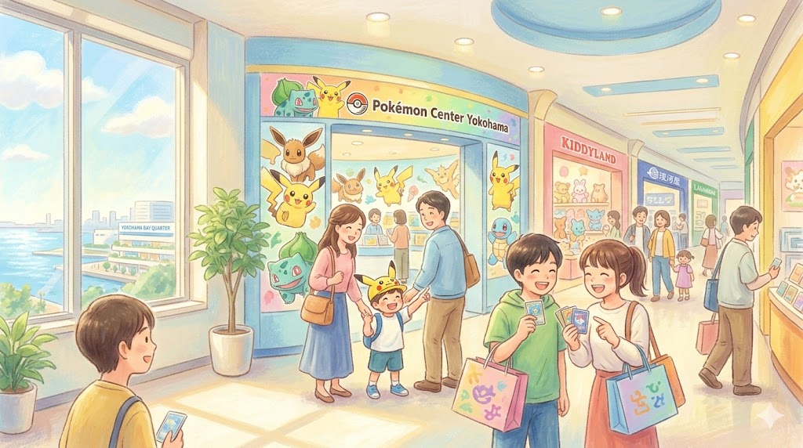

横浜駅東口の『記憶』と『継続』 ― 2026年3月、マルイシティ横浜閉店の先に残るホビーの聖域 ―
What we call the beginning is often the end
And to make an end is to make a beginning.
The end is where we start from.

余談ながら、筆者はこの令和八年三月の静寂なデスクの前で、ある種の「都市の脱皮」を感じざるを得ない。慣れ親しんだ看板が消え、建物の輪郭が書き換えられるとき、私たちはそこに一抹の寂しさを覚える。しかし、それは同時に、その場所が持つ真の『核』が露わになる瞬間でもある。
2026年2月28日（土）。横浜駅東口の象徴の一つであったマルイシティ横浜（スカイビル内）が、約30年の歴史に幕を下ろした。素材テキストが示す通り、今はもう「マルイ」という巨大な屋号は存在しない。だが、その巨大な空白の中に、消えることなく熱を帯び続けるエリアがある。それが、スカイビル7階・8階を中心としたホビー・キャラクター・ゾーンだ。
一、構造的継承：百貨店から「特化型モール」への緩やかな変容
マルイ本体が撤退した後も、スカイビルの直営テナントとして営業を継続する顔ぶれを見れば、2026年の消費者が何を求めているのかが鮮明に浮かび上がる。そこにあるのは、単なる物販ではなく「偏愛」と「体験」の集積地だ。
「マルイがなくなってちょっと寂しい気持ちになりますが、スカイビルのホビーゾーンはまだ健在。そっちをメインに回ってみるのもいいかもです」
かつてはエスカレーターでシームレスに繋がっていたフロアは、現在はエレベーター経由でのアクセスが主軸となっている。この物理的な制約は、図らずもそのフロアを独立した「聖域」のように演出している。特に8階のポケモンセンターヨコハマやキデイランドは、もはや百貨店の枠組みを超えた、横浜東口エリアの強力なデスティネーション（目的地）であり続けている。
💡 ファクトチェック：スカイビル内 継続・移転スポット（2026年3月現在）
- 8階：ポケモンセンター / キデイランド → 従来通り継続営業。ちいかわらんど、リラックマストア等も健在。
- 7階：駿河屋 / MINT / らしんばん → ホビー・カードの核として継続。らしんばんは4月17日に7階へ移転オープン予定。
- 1階：1・2・3 CLUB HOUSE → 2階から移転し、名物の「パン詰め放題」とともに再始動。
二、回遊の再定義：シーバスとAIが繋ぐ「水際」の未来
マルイの閉店は、横浜駅東口を「通過点」から「起点」へと再定義するきっかけになるかもしれない。素材が提案するように、スカイビル（YCAT直結）を拠点とした回遊ルートは、2026年の今、より多様な広がりを見せている。
【スカイビルを出た後の主要ルート】
- 美食とリラックス：隣接するそごう横浜店のレストラン街や、海風を感じる「横浜ベイクォーター」のテラス席。
- 水上の移動体験：ベイクォーターから「シーバス」に乗り、赤レンガ倉庫や山下公園へ。2026年の自律航行技術が静かに溶け込む水上ルートは、都市の喧騒を忘れさせる。
- 地下街の深淵：ポルタ、ルミネ、ジョイナスを繋ぐ巨大な地下迷宮は、天候に左右されないショッピングの最適解だ。
百貨店という20世紀型のビジネスモデルが形を変えても、そこに集まる人々の熱狂――推しを愛で、趣味に没頭するエネルギー――だけは、AIがどれほど進化しようとも代替不可能な、私たちの選ぶ未来の断片なのだ。
形あるものはいつか変わる。しかし、横浜駅東口の風に吹かれながら、新しい推しに出会う喜びや、パンの詰め放題に一喜一憂する人間味あふれる光景は、これからもこのビルの中に息づいていく。マルイが消えた寂しさを抱えつつ、新しく生まれ変わるスカイビルの「次の一歩」を、私たちはワクワクしながら見守っていきたい。
📚 参考・関連記事
- 横浜スカイビル 公式サイト — マルイシティ横浜退店後の各テナントの営業状況や、7階・8階ホビーエリアの最新情報を確認するための一次情報源として最適です。
- 丸井グループ ニュースリリース — マルイシティ横浜の閉店に関する公式発表や、約30年にわたる営業の歴史、今後の事業展開についての背景を知ることができます。
- 横浜市 都市整備局：横浜駅周辺の開発・再整備（エキサイトよこはま22） — マルイの閉店を「都市の脱皮」と捉える視点において、横浜駅東口エリア全体の再開発計画や将来像を把握するための公的な資料です。